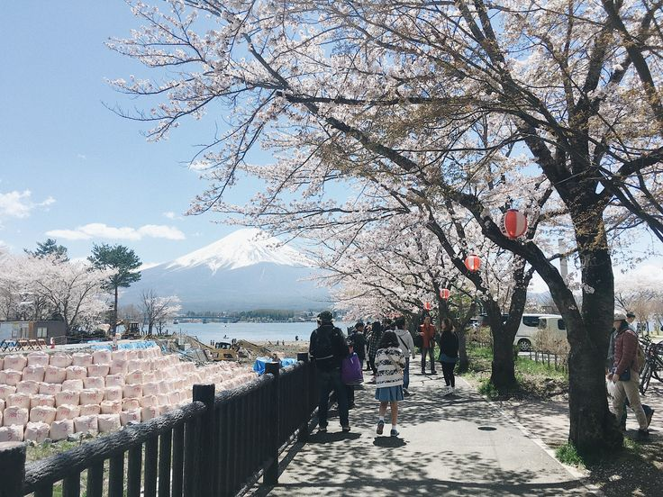
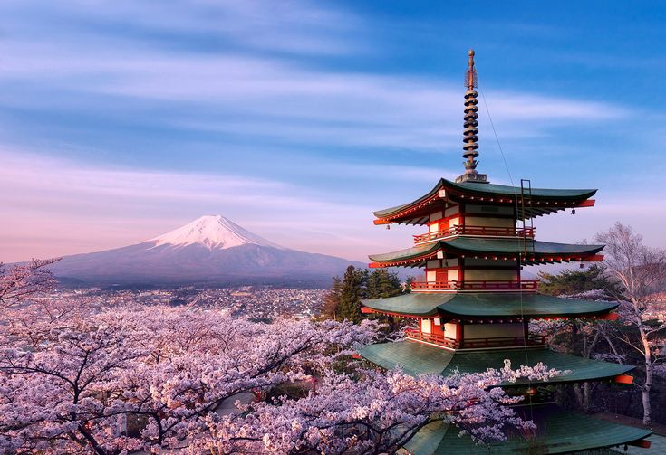
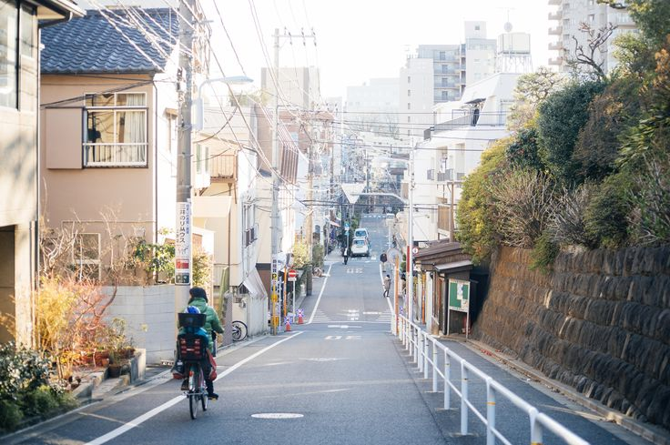
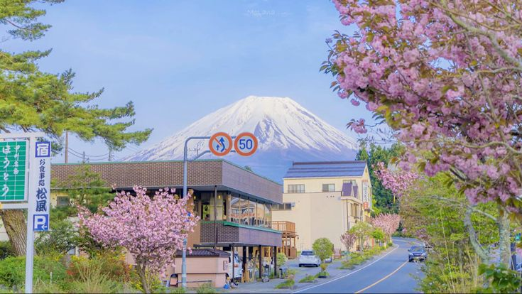

Jepang, sebuah negara kepulauan yang terletak di Asia Timur, bagai lukisan alam yang hidup dengan keindahan tiada tara. Dengan empat musim yang jelas, setiap periode waktu membawa keajaiban tersendiri pada lanskap negeri matahari terbit ini. Saat musim semi tiba, seluruh negeri berubah menjadi palet warna merah muda dan putih dengan bunga sakura yang mekar. Bunga-bunga halus ini tumbuh di seluruh penjuru negeri, mulai dari taman kota yang sibuk di Tokyo hingga jalan setapak yang tenang di Kyoto. Pepohonan sakura yang penuh dengan bunga menciptakan hamparan kanopi merah muda, sering kali ditemani dengan festival-festival lokal dimana keluarga dan teman berkumpul untuk piknik di bawah pohon-pohon indah ini, sebuah tradisi yang dikenal dengan 'hanami'. Jepang menawarkan pemandangan yang bisa membuat siapa saja terpukau. Sebuah perpaduan antara alam, budaya, dan tradisi menjadikan Jepang sebagai salah satu destinasi wisata yang paling diidamkan di dunia.
Universitas Hasanuddin
Phone Number: 08871293167
Email: rasyadbimasatya04@gmail.com
Instagram: @rsydbmstya